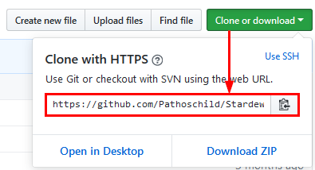

Modding:Código abierto
Un mod es de código abierto si su código es público y está cubierto por una licencia de código abierto. Se recomienda encarecidamente a los modders que hagan que sus mods y paquetes de contenido sean de código abierto.
¿Por qué es importante el código abierto?
El código abierto es importante para la salud a largo plazo de la comunidad de modding y ayuda a que la experiencia del jugador sea más fluida. Dependiendo de la licencia de código abierto que elija, otros pueden...
- ver su código;
- realizar cambios en una copia del código;
- enviarle propuestas de actualizaciones, cambios y correcciones;
- preparar actualizaciones no oficiales;
- mejor ayuda a los usuarios con preguntas de soporte mirando el código.
El efecto puede ser significativo: solo el 1 % de las modificaciones de código abierto fallaron cuando se lanzó SMAPI 3.0, en comparación con el 51% de los mods de código cerrado (y eso no cuenta las mods de código cerrado que nunca se actualizaron para los lanzamientos de juegos recientes).
Preguntas comunes
- ¿Qué pasa si no me gusta un cambio propuesto?
- Todavía tienes el control total de tu código original y páginas del mod; ¡nadie puede cambiarlos sin su aprobación! Eres libre de rechazar un cambio que alguien proponga a tu mod.
- ¿Qué es un repositorio Git?
- Git es un software que ayuda a realizar un seguimiento de los cambios en su código, y un repositorio es una carpeta que contiene sus archivos mod con el seguimiento de Git. Puedes buscar tutoriales de Git si quieres saber más, pero no te preocupes: ¡no necesitas saber cómo funciona para usarlo!
- ¿Esto se aplica a los paquetes de contenido?
- ¡Sí! Los paquetes de contenido no están compilados, pero otros modders no pueden hacer cambios legalmente sin una licencia de código. Tenga en cuenta que las opciones de 'permisos' en sitios como Nexus son legalmente dudosas (p.ej., ¿quién tiene los derechos de autor de los derivados? ¿Se pueden volver a otorgar licencias a los derivados?),por lo que también es una buena idea tener una licencia de código para los paquetes de contenido. Eso también permite que otros modders contribuyan con solicitudes de extracción y actualizaciones. Cuando esta página dice 'código', significa todo en su paquete de contenido, incluidos archivos JSON, images, maps, etc.
Haz que tu código sea de código abierto
Si tu código ya está en GitHub
¡Ya casi has terminado! Solo necesita elegir una licencia de código abierto (la licencia MIT es una buena opción si no ha decidido), y add agregar una LICENSE al archivo del repositorio.
Si tu código no está en GitHub
Parecen muchos pasos, pero no se preocupe: es bastante sencillo y solo necesita hacerlo una vez. Si necesita ayuda, venga y pregunte en #making-mods en Stardew Valley Discord . :)
- Crear un repositorio de Git
- Primero, creemos el repositorio público que contendrá su código.
- Cree una cuenta de GitHub.
- Instale SourceTree (Mac/Windows) o GitKraken (Linux). Cuando se le solicite, vincúlelo a su cuenta de GitHub
- Cree el repositorio en GitHub.
Configuraciones sugeridas (ver la captura de pantalla):
- Nombre del repositorio: considere StardewMods si colocará todas sus mods en el mismo repositorio; de lo contrario, use el nombre de su mod.
- Descripción: considera Mods para Stardew Valley.
- Inicializar... con un README: habilite esta opción.
- Agregar .gitignore: deje esto en blanco; agregaremos los nuestros más tarde.
- Agregue una licencia: elija una licencia (la licencia MIT es una buena opción si no ha decidido) y selecciónela aquí.
- Haga clic en 'Create repository (Crear repositorio)'.
- En la página del repositorio que aparece, haz clic en el botón verde "Clone or download" y copia la URL:
 - En SourceTree, haga click en File > Clone y pegue la URL. Elija una ruta de destino que sea de fácil acceso (como C:\source\StardewMods), y haga clic en 'Clone (Clonar)'.
- Agregar los archivos mod
- A continuación, agreguemos sus archivos al repositorio.
- Abra la carpeta del repositorio (la ruta de destino que ingresó en el paso 5 anterior).
- Descomprima este archivo zip en la carpeta. Esto agregará dos archivos a la raíz de su carpeta: .gitattributes (que normaliza los finales de línea entre Linux/Mac/Windows) y .gitignore (que oculta los archivos que no deben confirmarse desde Git). Solo necesita tenerlos en su carpeta, no necesitará cambiarlos.
- Copie sus archivos del mod (incluyendo el .sln) en la carpeta.
- Confirme sus cambios en SourceTree:
- Haz clic en Commit (Confirmar) en la parte superior.
- Haga clic en Stage All para agregar los archivos a su confirmación.
- Ingrese una descripción legible por humanos para sus cambios en el cuadro de texto. El formato depende de usted, pero "agregar archivos mod iniciales" está bien por ahora.
- Asegúrate de que esté marcada la opción "Push changes immediately (Enviar cambios inmediatamente)".
- Haz clic en "Commit (Confirmar)".
- Hacer cambios
- Los pasos anteriores son todos de configuración inicial. Cuando quieras hacer cambios, es mucho más fácil:
- Edite su código en la carpeta del repositorio.
- En SourceTree, confirme y envíe sus cambios (vea el paso 4 en la sección anterior).
Ver también
- Modding:Compatibilidad de mods para los enlaces de compatibilidad del código fuente para cada mod, donde esté disponible.